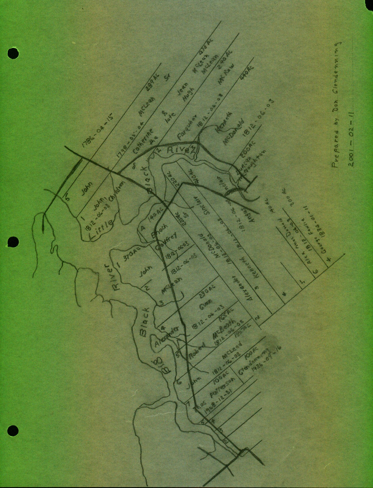

________
Early Names
The following information about early names of the area was taken from AGeographical Names of New Brunswick, 1875.@
Miramichi was Aprobably named by Cartier in 1535 from Montagnais Maissimeu Assi A meaning Micmac Land. Northumberland Straight appears to have been named by Admiral Colville around 1877 after his flagship, Northumberland. Before that, it was known as Red Sea. Northumberland County was established in 1785 and was probably named after Northumberland Strait.
Escuminac comes from Micmac Eskumunaak meaning Alookout place@. Hardwicke Parish was established in 1851 and named after Benjamin Hardwick of London who contributed to a Church of England Mission at Bay du Vin. He also contributed a communion service to the church.
Black River was settled in 1820 by settlers from Scotland. Before that it was known as Glenelg. Glenelg Parish was established in 1814 and was named by Major McDonald who settled in the area around 1790. Napan is derived from the Micmac Manabalnamajik which means Atake fish off stick@.
Land Grants on the Little Black River
The reverse side of this newsletter shows the layout of original land grants along the Little Black River. Information in the book and on maps should be the same, but isn=t always. The following information was gleaned from these sources. All lots were granted on 1812-06-03 unless otherwise noted:
1 Cannot find Lot No. 1
2 Alexander McDonald Sr.225 Ac
3. Kenneth Sinclair 220 acres
4&5 Angus Sinclair 410 acres
6 Alexander McDonald 140 acres.
Next was a lot of 300 Acres granted to George Fowlie in 1834-01-11
On the other side of the Little Black River starting at the mouth, we find:
1 John, Catherine and Jean, children of Hugh McLean 470 Acres
2 Farquhar McRaw 240 Acres
3 Kenneth MacDonald 440 Acres
4 Duncan McNaughton 200 Acres
Moving west from the Alexander McDonald property, we find:
Lot A - Enoch Godfrey - 140 Acres
Lots # 1,2 & 3 - John McLean - 370 Acres
Lot # 4 - Alexander Gunn - 230 Acres
Lot # 5 - Robert MacBeath - 165 Acres
Lot # 6 - John MacLeod - 195 Acres
The front half, 100 acres, of lot # 7 was granted to Thomas Patterson 1908-`12-31; the rear 100 acres was granted to Elmer Glendenning on 1936-09-16,
The Chronicle is an occasional newsletter published by Don Glendenning It is intended to solicit and provide information about family tree matters. Comments, enquiries and information may be sent to 62 Queen Elizabeth Drive, Charlottetown, PEI, C1A 3A9. Tel:902 892 5859 Email dglende@attglobal.net. Feel free to make and pass along copies of this newsletter.
Dorothy (MacKay) Lind wondered about Ken’s Hill. As one left the Little Branch School heading for Loggieville, one passed the Jim Finno property. It was a large two-story home in a long lane and near the river. From the turn to the brook was what we called the “Finno property.” Dad had bought it from Jim Finno many years ago. Still traveling towards Loggieville, one climbed “Ken’s Hill”. On the right, towards the shore, stood the Ken MacDonald house. Further along, still on the right hand side of the road, was a small bungalow built originally, I believe, by Weldon MacDonald. Ken and Cameron MacDonald were Weldon’s sons. As a matter of interest, Cameron retired back to Black River and built a home on the hill where the Ken MacDonald property once stood.
